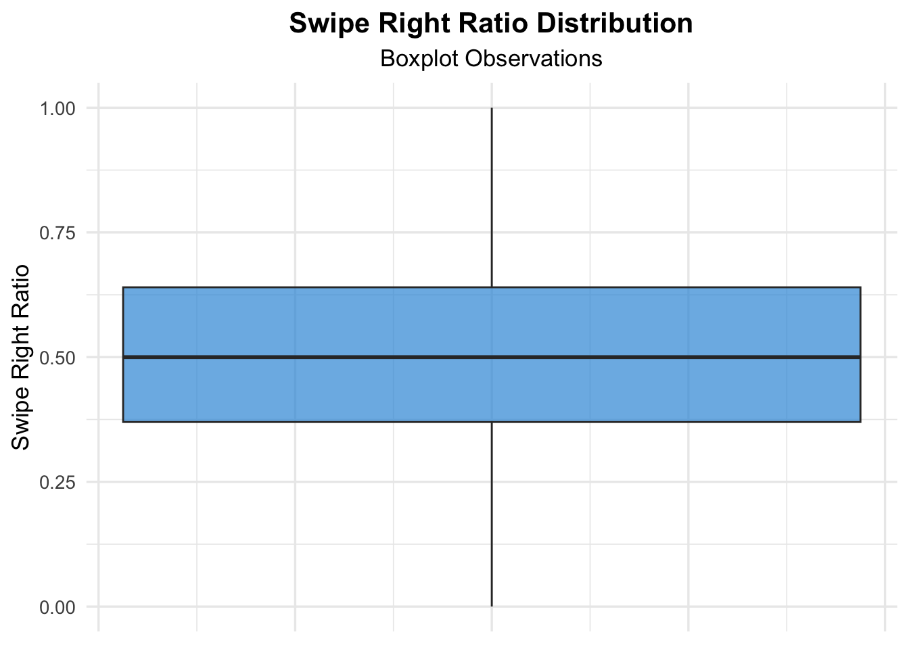

10 David M.
10.1 Data Import
10.2 Initial Exploration of Data
[1] 50000 19 gender sexual_orientation location_type income_bracket
1 Prefer Not to Say Gay Urban High
2 Male Bisexual Suburban Upper-Middle
3 Non-binary Pansexual Suburban Low
4 Genderfluid Gay Metro Very Low
5 Male Bisexual Urban Middle
6 Genderfluid Lesbian Small Town High
7 Male Asexual Metro Lower-Middle
8 Female Bisexual Remote Area Upper-Middle
9 Male Gay Suburban High
10 Prefer Not to Say Gay Remote Area Upper-Middle
11 Female Gay Remote Area Lower-Middle
12 Non-binary Queer Urban Very Low
13 Female Lesbian Remote Area Middle
14 Transgender Asexual Metro Upper-Middle
15 Male Straight Suburban Very Low
16 Genderfluid Queer Suburban Very High
17 Prefer Not to Say Gay Urban Middle
18 Male Queer Small Town Very Low
19 Transgender Straight Suburban Middle
20 Female Bisexual Rural Low
education_level interest_tags
1 Bachelor’s Fitness, Politics, Traveling
2 No Formal Education Languages, Fashion, Parenting
3 Master’s Movies, Reading, DIY
4 Postdoc Coding, Podcasts, History
5 Bachelor’s Clubbing, Podcasts, Cars
6 Associate’s Anime, Clubbing, DIY
7 High School Tech, Makeup, Parenting
8 Postdoc Spirituality, Sneaker Culture, Meditation
9 Diploma MMA, Board Games, Startups
10 Bachelor’s Social Activism, Astrology, Photography
11 Postdoc Startups, Fashion, Yoga
12 Master’s Memes, Fitness, Gaming
13 Postdoc Anime, Spirituality, Stand-up Comedy
14 PhD Photography, Fitness, Politics
15 No Formal Education Astrology, Cooking, Investing
16 PhD Poetry, Fashion, Movies
17 Master’s Movies, Fitness, Fashion
18 No Formal Education Social Activism, Painting, Hiking
19 No Formal Education DIY, Spirituality, Clubbing
20 No Formal Education Meditation, Sneaker Culture, Painting
app_usage_time_min app_usage_time_label swipe_right_ratio swipe_right_label
1 52 Moderate 0.60 Optimistic
2 279 Extreme User 0.56 Optimistic
3 49 Moderate 0.41 Optimistic
4 185 Extreme User 0.32 Balanced
5 83 High 0.32 Balanced
6 138 Addicted 0.62 Optimistic
7 161 Addicted 0.38 Balanced
8 219 Extreme User 0.47 Optimistic
9 32 Moderate 0.23 Balanced
10 150 Addicted 0.68 Optimistic
11 191 Extreme User 0.41 Optimistic
12 123 Addicted 0.53 Optimistic
13 216 Extreme User 0.71 Swipe Maniac
14 32 Moderate 0.38 Balanced
15 121 Addicted 0.28 Balanced
16 49 Moderate 0.56 Optimistic
17 97 High 0.49 Optimistic
18 47 Moderate 0.49 Optimistic
19 146 Addicted 0.46 Optimistic
20 31 Moderate 0.65 Optimistic
likes_received mutual_matches profile_pics_count bio_length
1 173 23 4 44
2 107 7 3 301
3 91 27 2 309
4 147 6 5 35
5 94 11 1 343
6 163 22 4 112
7 54 20 3 202
8 149 12 2 112
9 98 12 4 239
10 111 5 3 1
11 195 5 4 488
12 145 30 0 43
13 54 29 4 386
14 86 0 4 283
15 71 21 3 109
16 168 13 2 216
17 137 14 1 216
18 192 27 1 85
19 108 22 5 401
20 191 10 0 25
message_sent_count emoji_usage_rate last_active_hour swipe_time_of_day
1 75 0.36 13 Early Morning
2 35 0.42 0 Morning
3 33 0.41 1 After Midnight
4 5 0.07 21 Morning
5 34 0.11 22 After Midnight
6 87 0.18 10 Early Morning
7 82 0.32 14 Morning
8 17 0.54 16 Evening
9 67 0.27 8 Late Night
10 92 0.27 23 Afternoon
11 99 0.57 16 Early Morning
12 93 0.13 15 Early Morning
13 93 0.43 22 Morning
14 29 0.23 18 Morning
15 69 0.08 4 After Midnight
16 52 0.39 14 After Midnight
17 23 0.54 8 Evening
18 52 0.31 15 Evening
19 71 0.41 21 After Midnight
20 74 0.18 15 Late Night
match_outcome
1 Mutual Match
2 Chat Ignored
3 Date Happened
4 No Action
5 One-sided Like
6 Blocked
7 No Action
8 One-sided Like
9 Mutual Match
10 Relationship Formed
11 Catfished
12 Relationship Formed
13 No Action
14 Mutual Match
15 Catfished
16 Mutual Match
17 Blocked
18 Blocked
19 Date Happened
20 Relationship FormedRows: 50,000
Columns: 19
$ gender <chr> "Prefer Not to Say", "Male", "Non-binary", "Gende…
$ sexual_orientation <chr> "Gay", "Bisexual", "Pansexual", "Gay", "Bisexual"…
$ location_type <chr> "Urban", "Suburban", "Suburban", "Metro", "Urban"…
$ income_bracket <chr> "High", "Upper-Middle", "Low", "Very Low", "Middl…
$ education_level <chr> "Bachelor’s", "No Formal Education", "Master’s", …
$ interest_tags <chr> "Fitness, Politics, Traveling", "Languages, Fashi…
$ app_usage_time_min <int> 52, 279, 49, 185, 83, 138, 161, 219, 32, 150, 191…
$ app_usage_time_label <chr> "Moderate", "Extreme User", "Moderate", "Extreme …
$ swipe_right_ratio <dbl> 0.60, 0.56, 0.41, 0.32, 0.32, 0.62, 0.38, 0.47, 0…
$ swipe_right_label <chr> "Optimistic", "Optimistic", "Optimistic", "Balanc…
$ likes_received <int> 173, 107, 91, 147, 94, 163, 54, 149, 98, 111, 195…
$ mutual_matches <int> 23, 7, 27, 6, 11, 22, 20, 12, 12, 5, 5, 30, 29, 0…
$ profile_pics_count <int> 4, 3, 2, 5, 1, 4, 3, 2, 4, 3, 4, 0, 4, 4, 3, 2, 1…
$ bio_length <int> 44, 301, 309, 35, 343, 112, 202, 112, 239, 1, 488…
$ message_sent_count <int> 75, 35, 33, 5, 34, 87, 82, 17, 67, 92, 99, 93, 93…
$ emoji_usage_rate <dbl> 0.36, 0.42, 0.41, 0.07, 0.11, 0.18, 0.32, 0.54, 0…
$ last_active_hour <int> 13, 0, 1, 21, 22, 10, 14, 16, 8, 23, 16, 15, 22, …
$ swipe_time_of_day <chr> "Early Morning", "Morning", "After Midnight", "Mo…
$ match_outcome <chr> "Mutual Match", "Chat Ignored", "Date Happened", … gender sexual_orientation location_type income_bracket
Length:50000 Length:50000 Length:50000 Length:50000
Class :character Class :character Class :character Class :character
Mode :character Mode :character Mode :character Mode :character
education_level interest_tags app_usage_time_min app_usage_time_label
Length:50000 Length:50000 Min. : 0.0 Length:50000
Class :character Class :character 1st Qu.: 74.0 Class :character
Mode :character Mode :character Median :150.0 Mode :character
Mean :149.9
3rd Qu.:225.0
Max. :300.0
swipe_right_ratio swipe_right_label likes_received mutual_matches
Min. :0.0000 Length:50000 Min. : 0.00 Min. : 0.00
1st Qu.:0.3700 Class :character 1st Qu.: 49.00 1st Qu.: 6.00
Median :0.5000 Mode :character Median :100.00 Median :13.00
Mean :0.5007 Mean : 99.53 Mean :13.87
3rd Qu.:0.6400 3rd Qu.:150.00 3rd Qu.:22.00
Max. :1.0000 Max. :200.00 Max. :30.00
profile_pics_count bio_length message_sent_count emoji_usage_rate
Min. :0.000 Min. : 0.0 Min. : 0.00 Min. :0.0000
1st Qu.:1.000 1st Qu.:125.0 1st Qu.: 25.00 1st Qu.:0.1600
Median :3.000 Median :250.0 Median : 50.00 Median :0.2700
Mean :2.988 Mean :250.2 Mean : 50.07 Mean :0.2862
3rd Qu.:5.000 3rd Qu.:376.0 3rd Qu.: 75.00 3rd Qu.:0.3900
Max. :6.000 Max. :500.0 Max. :100.00 Max. :0.9400
last_active_hour swipe_time_of_day match_outcome
Min. : 0.00 Length:50000 Length:50000
1st Qu.: 5.00 Class :character Class :character
Median :12.00 Mode :character Mode :character
Mean :11.52
3rd Qu.:18.00
Max. :23.00 gender sexual_orientation location_type
0 0 0
income_bracket education_level interest_tags
0 0 0
app_usage_time_min app_usage_time_label swipe_right_ratio
0 0 0
swipe_right_label likes_received mutual_matches
0 0 0
profile_pics_count bio_length message_sent_count
0 0 0
emoji_usage_rate last_active_hour swipe_time_of_day
0 0 0
match_outcome
0 # A tibble: 6 × 2
gender gender_count
<chr> <int>
1 Female 8384
2 Genderfluid 8307
3 Male 8255
4 Non-binary 8366
5 Prefer Not to Say 8335
6 Transgender 8353# A tibble: 8 × 2
sexual_orientation orientation_count
<chr> <int>
1 Asexual 6254
2 Bisexual 6158
3 Demisexual 6301
4 Gay 6121
5 Lesbian 6315
6 Pansexual 6237
7 Queer 6288
8 Straight 6326# A tibble: 6 × 2
location_type location_count
<chr> <int>
1 Metro 8293
2 Remote Area 8519
3 Rural 8331
4 Small Town 8343
5 Suburban 8296
6 Urban 8218# A tibble: 7 × 2
income_bracket income_count
<chr> <int>
1 High 7309
2 Low 7132
3 Lower-Middle 7118
4 Middle 7126
5 Upper-Middle 7076
6 Very High 7178
7 Very Low 7061# A tibble: 9 × 2
education_level education_count
<chr> <int>
1 Associate’s 5499
2 Bachelor’s 5646
3 Diploma 5447
4 High School 5632
5 MBA 5637
6 Master’s 5503
7 No Formal Education 5569
8 PhD 5594
9 Postdoc 5473The dataset has a fairly even distribution across categories, which, while not entirely realistic, allows for more reliable analysis.
This dataset allows for unique analysis of digital intimacy trends in a controlled environment. The balance across demographics suggests that the Kaggle user who uploaded these wanted an intentional design for analysis, which may not truly mirror real-world dating ecosystems–which are shaped by structural inequalities, algorithmic biases, and cultural expectations. It’s important for us as a group to keep this in mind as we do both our EDA and the entire project as a wholel. That this is fully simulated data, while useful for pattern recognition, can obscure the lived experiences of users on actual platforms—especially those from marginalized communities: like the LGBTQ+ community which a majority of our project hinges upon.
Since the data is simulated, it is a note of interest as to how we can compare it to actual dating app experiences.
10.3 Exploring data points individually
Code
#Swipe Right Ratio Box Plot Jitter
ggplot(dating_app_data, aes(y = swipe_right_ratio)) +
geom_boxplot(fill = "#3498db", alpha = 0.7, outlier.color = "#e74c3c") +
labs(title = "Swipe Right Ratio Distribution", subtitle = "Boxplot Observations", y = "Swipe Right Ratio", x = NULL) +
theme_minimal(base_size = 13) +
theme(
plot.title = element_text(face = "bold", hjust = 0.5),
plot.subtitle = element_text(hjust = 0.5),
axis.text.x = element_blank())
Code
#APP USAGE TIME (HISTOGRAM)
ggplot(dating_app_data, aes(x = app_usage_time_min)) +
geom_histogram(binwidth = 10, fill = "#69b3a2", color = "white", alpha = 0.7) +
geom_density(aes(y = ..density.. * 10), color = "red") +
labs(title = "Distribution of App Usage Time (in minutes)", x = "App Usage Time (min)", y = "Frequency") +
theme_minimal()
10.4 Research Qs
Research Question: What is the most common interest tag?
Code
library(stringr)
common_tags <- c("music", "hiking", "movies", "travel", "fitness", "food", "books", "dancing", "photography", "art", "tattoos", "yoga", "pets", "DIY", "traveling", "languages", "writing", "painting", "coding")
tag_counts <- sapply(common_tags, function(tag) sum(str_detect(dating_app_data$interest_tags, tag)))
tag_counts_df <- data.frame(tag = common_tags, count = tag_counts)
tag_counts_df <- tag_counts_df[order(-tag_counts_df$count), ]
head(tag_counts_df, 1) tag count
art art 3065Code
Research Question: How does income impact app dependence?
Code

Research Question: Are there income differences in dating app behavior and expectations?
Code
# Load required libraries
library(ggplot2)
library(dplyr)
# Ensure income_bracket is an ordered factor
dating_app_data$income_bracket <- factor(dating_app_data$income_bracket,
levels = c("Very Low", "Low", "Middle", "Upper-Middle", "High"),
ordered = TRUE)
# Create the trivariate plot with facet by match_outcome
ggplot(dating_app_data, aes(x = income_bracket, fill = app_usage_time_label)) +
geom_bar(position = "dodge") +
facet_wrap(~match_outcome) +
labs(title = "Match Outcome by Income and App Usage Time",
x = "Income Bracket",
y = "Count",
fill = "App Usage Time") +
theme_minimal() +
theme(legend.position = "top",
plot.title = element_text(hjust = 0.5))Code
dating_app_data$income_bracket <- factor(dating_app_data$income_bracket,
levels = c("Very Low", "Low", "Middle", "Upper-Middle", "High"),
ordered = TRUE)
filtered_dates <- dating_app_data %>%
mutate(match_outcome_clean = tolower(str_trim(match_outcome))) %>%
filter(!match_outcome_clean %in% c("Catfished", "No Action", "One-sided Like", "Instant Match", "Chat Ignored", "Mutual Match"))
ggplot(filtered_dates, aes(y = income_bracket, fill = app_usage_time_label)) +
geom_bar(position = "dodge") +
facet_wrap(~match_outcome) +
labs(title = "Match Outcomes by Income & App Usage Time",
x = "Count of People",
y = "Income Bracket",
fill = "App Usage Time") +
theme_minimal() +
theme(legend.position = "top",
plot.title = element_text(hjust = 0.5))[1] 4